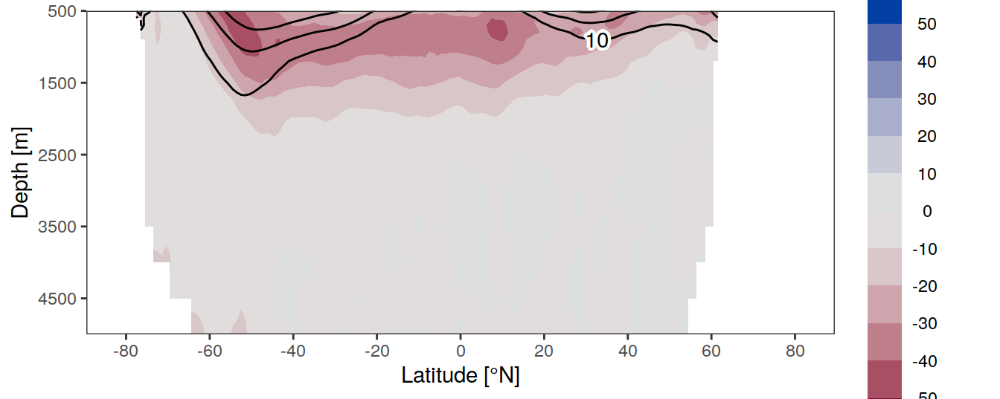
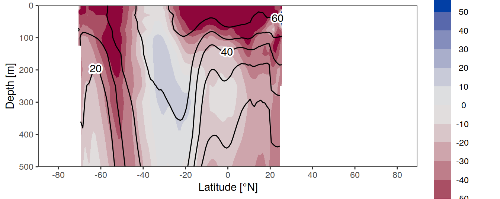
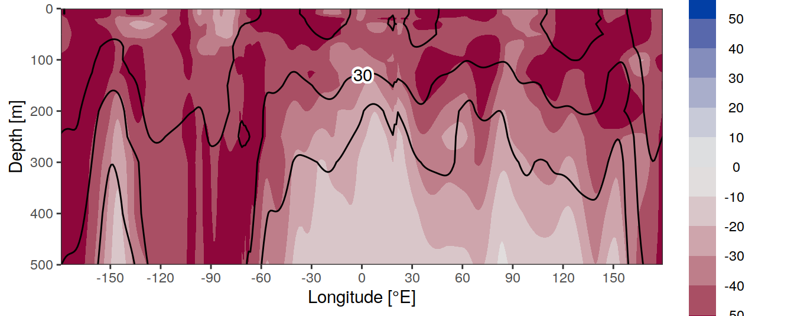
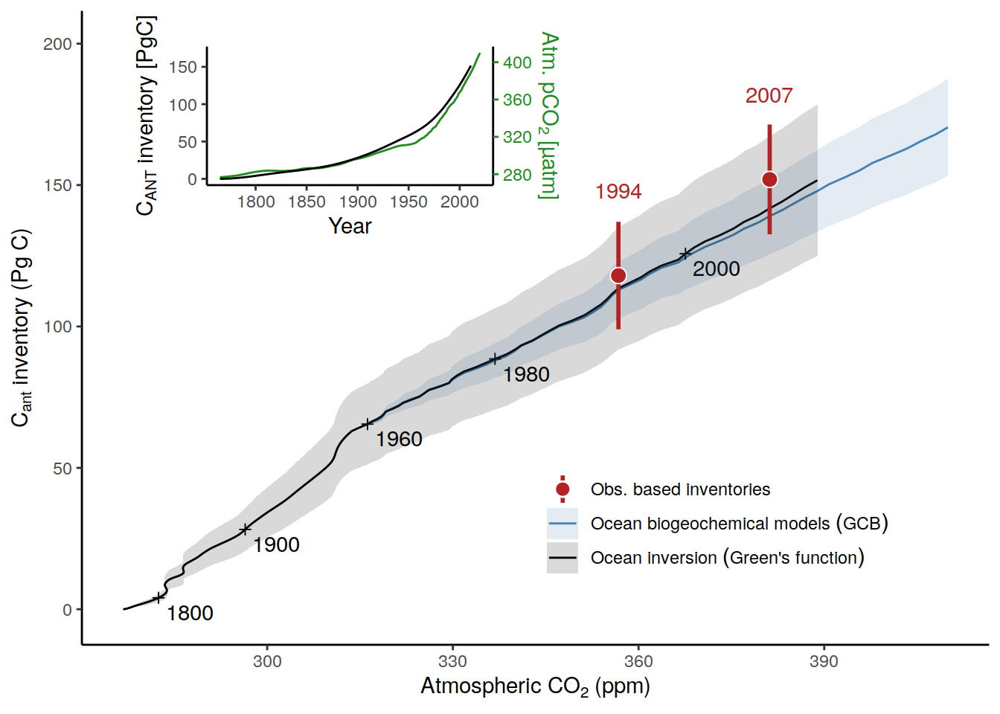
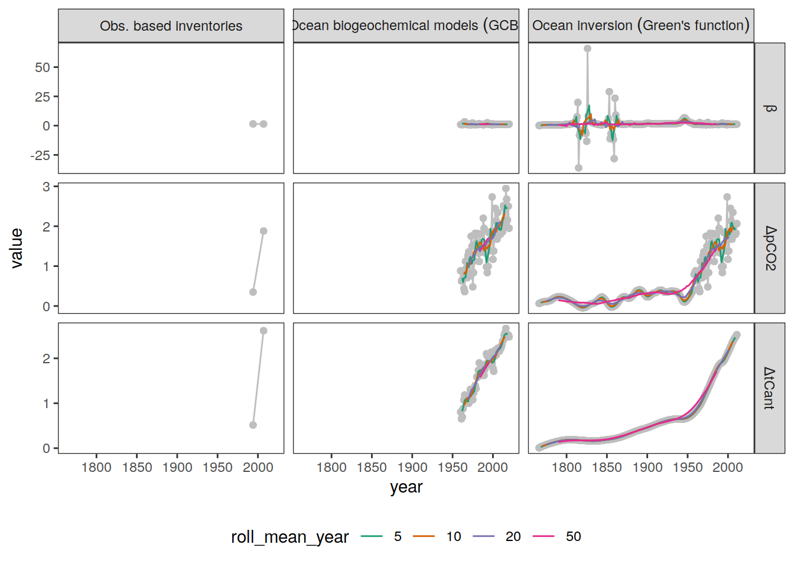
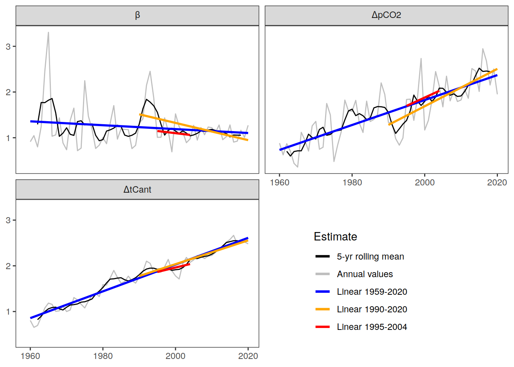
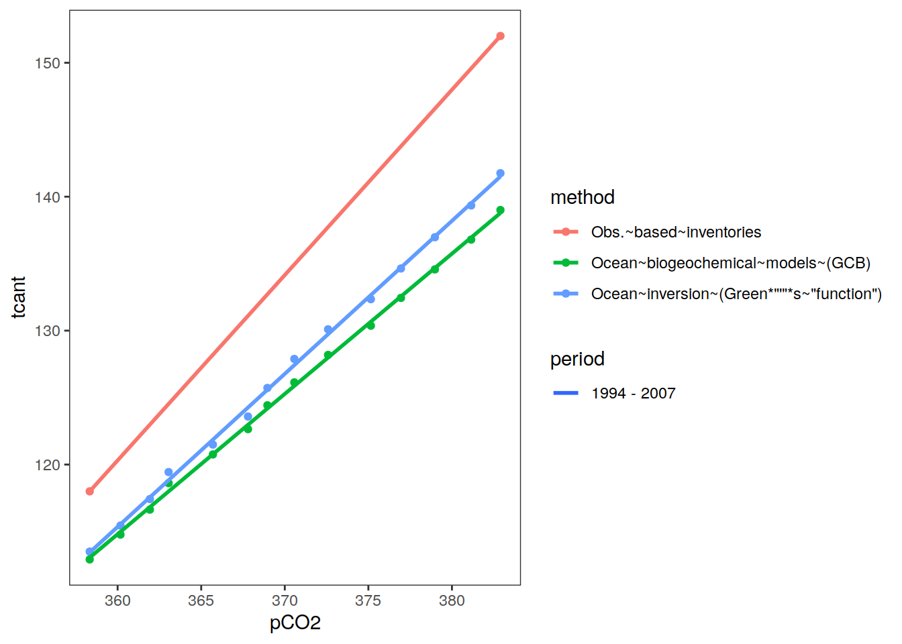
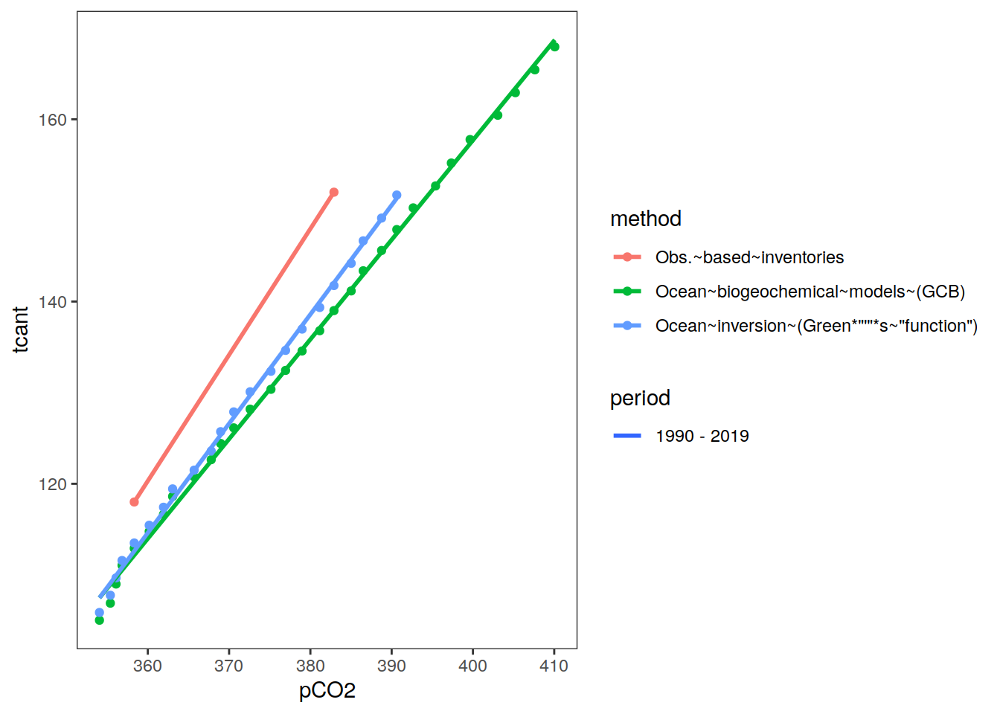

Ocean interior storage
Jens Daniel Müller
07 October, 2022
Last updated: 2022-10-07
Checks: 7 0
Knit directory: ocean_carbon_sink_review/
This reproducible R Markdown analysis was created with workflowr (version 1.7.0). The Checks tab describes the reproducibility checks that were applied when the results were created. The Past versions tab lists the development history.
Great! Since the R Markdown file has been committed to the Git repository, you know the exact version of the code that produced these results.
Great job! The global environment was empty. Objects defined in the global environment can affect the analysis in your R Markdown file in unknown ways. For reproduciblity it’s best to always run the code in an empty environment.
The command set.seed(20220224) was run prior to running
the code in the R Markdown file. Setting a seed ensures that any results
that rely on randomness, e.g. subsampling or permutations, are
reproducible.
Great job! Recording the operating system, R version, and package versions is critical for reproducibility.
Nice! There were no cached chunks for this analysis, so you can be confident that you successfully produced the results during this run.
Great job! Using relative paths to the files within your workflowr project makes it easier to run your code on other machines.
Great! You are using Git for version control. Tracking code development and connecting the code version to the results is critical for reproducibility.
The results in this page were generated with repository version d6c72a9. See the Past versions tab to see a history of the changes made to the R Markdown and HTML files.
Note that you need to be careful to ensure that all relevant files for
the analysis have been committed to Git prior to generating the results
(you can use wflow_publish or
wflow_git_commit). workflowr only checks the R Markdown
file, but you know if there are other scripts or data files that it
depends on. Below is the status of the Git repository when the results
were generated:
Ignored files:
Ignored: .Rhistory
Ignored: .Rproj.user/
Ignored: output/
Note that any generated files, e.g. HTML, png, CSS, etc., are not included in this status report because it is ok for generated content to have uncommitted changes.
These are the previous versions of the repository in which changes were
made to the R Markdown (analysis/interior_storage.Rmd) and
HTML (docs/interior_storage.html) files. If you’ve
configured a remote Git repository (see ?wflow_git_remote),
click on the hyperlinks in the table below to view the files as they
were in that past version.
| File | Version | Author | Date | Message |
|---|---|---|---|---|
| Rmd | d6c72a9 | jens-daniel-mueller | 2022-10-07 | rebuild with new Rstudio version |
| html | ab37e4d | jens-daniel-mueller | 2022-10-05 | Build site. |
| Rmd | fdb1257 | jens-daniel-mueller | 2022-10-05 | use NOAA GML atm pCO2 |
| html | 916ade0 | jens-daniel-mueller | 2022-10-05 | Build site. |
| Rmd | 0b8d1ec | jens-daniel-mueller | 2022-10-05 | extended beta analysis |
| html | 539c7f0 | jens-daniel-mueller | 2022-10-03 | Build site. |
| Rmd | 860b6e5 | jens-daniel-mueller | 2022-10-03 | extended beta analysis |
| html | 00ff554 | jens-daniel-mueller | 2022-09-28 | Build site. |
| Rmd | de0d66d | jens-daniel-mueller | 2022-09-28 | included OCIM 2014 |
| html | 2fe5f6e | jens-daniel-mueller | 2022-09-28 | Build site. |
| Rmd | be917ec | jens-daniel-mueller | 2022-09-28 | cleaned script |
| html | 49bd6ff | jens-daniel-mueller | 2022-09-28 | Build site. |
| Rmd | 9590d16 | jens-daniel-mueller | 2022-09-28 | cleaned script |
| html | 214a028 | jens-daniel-mueller | 2022-09-27 | Build site. |
| Rmd | b7d65c4 | jens-daniel-mueller | 2022-09-27 | split total and delta Cant |
| html | 506f6dd | jens-daniel-mueller | 2022-05-23 | Build site. |
| Rmd | 68782db | jens-daniel-mueller | 2022-05-23 | added meriodional section |
| html | e62db0d | jens-daniel-mueller | 2022-05-17 | Build site. |
| Rmd | 79d9427 | jens-daniel-mueller | 2022-05-17 | added some uncertainty estimates |
| html | 6e0af31 | jens-daniel-mueller | 2022-05-13 | Build site. |
| Rmd | d7277b6 | jens-daniel-mueller | 2022-05-13 | dCgasex included |
| html | cff0a04 | jens-daniel-mueller | 2022-05-13 | Build site. |
| Rmd | cd99ccd | jens-daniel-mueller | 2022-05-13 | dCgasex included |
| html | 5d661ad | jens-daniel-mueller | 2022-05-10 | Build site. |
| Rmd | 472c2c1 | jens-daniel-mueller | 2022-05-10 | beta plots refined |
| html | b9b71c3 | jens-daniel-mueller | 2022-05-03 | Build site. |
| Rmd | 8a99630 | jens-daniel-mueller | 2022-05-03 | beta factors calculated based on linear regression |
| html | d678f45 | jens-daniel-mueller | 2022-05-03 | Build site. |
| Rmd | 6855bca | jens-daniel-mueller | 2022-05-03 | beta analysis with various window width |
| html | 64fbd0e | jens-daniel-mueller | 2022-05-03 | Build site. |
| Rmd | d8517d7 | jens-daniel-mueller | 2022-05-03 | beta analysis included |
| html | 14bcc32 | jens-daniel-mueller | 2022-05-03 | Build site. |
| Rmd | 89c66d3 | jens-daniel-mueller | 2022-05-03 | update color Fig.1a |
| html | 9a779b2 | jens-daniel-mueller | 2022-05-03 | Build site. |
| Rmd | fa4bef3 | jens-daniel-mueller | 2022-05-03 | update Fig.1a |
| html | 95fb383 | jens-daniel-mueller | 2022-05-03 | Build site. |
| Rmd | e276bea | jens-daniel-mueller | 2022-05-03 | update Fig.1a |
| html | c19052e | jens-daniel-mueller | 2022-04-27 | Build site. |
| Rmd | d8c89ad | jens-daniel-mueller | 2022-04-27 | round tcant timeseries values |
| html | 69aa881 | jens-daniel-mueller | 2022-04-27 | Build site. |
| Rmd | 7346062 | jens-daniel-mueller | 2022-04-27 | round tcant values |
| html | 66c7424 | jens-daniel-mueller | 2022-04-27 | Build site. |
| Rmd | 57adc55 | jens-daniel-mueller | 2022-04-27 | finalized storage vs pco2 plot and write data |
| html | 45ba9e2 | jens-daniel-mueller | 2022-04-27 | Build site. |
| Rmd | 7827b59 | jens-daniel-mueller | 2022-04-27 | finalized storage vs pco2 plot and write data |
| html | efdf7e2 | jens-daniel-mueller | 2022-04-27 | Build site. |
| Rmd | 3dc3671 | jens-daniel-mueller | 2022-04-27 | revised storage vs pco2 plot and data prep |
| html | dd7d7bf | jens-daniel-mueller | 2022-04-27 | Build site. |
| Rmd | 64003ff | jens-daniel-mueller | 2022-04-27 | revised storage vs pco2 plot and data prep |
| html | 858298d | jens-daniel-mueller | 2022-04-27 | Build site. |
| Rmd | 454a335 | jens-daniel-mueller | 2022-04-27 | write column inventories file |
| html | c73b1a2 | jens-daniel-mueller | 2022-04-27 | Build site. |
| Rmd | dc13675 | jens-daniel-mueller | 2022-04-27 | updated maps |
| html | a5fcb9e | jens-daniel-mueller | 2022-04-27 | Build site. |
| Rmd | 36b88dc | jens-daniel-mueller | 2022-04-27 | incl all G19 data without mask |
| html | 99018ac | jens-daniel-mueller | 2022-04-14 | Build site. |
| Rmd | c2cd18e | jens-daniel-mueller | 2022-04-14 | excluded GCB models prior to 1959 |
| html | c276645 | jens-daniel-mueller | 2022-04-14 | Build site. |
| Rmd | 23e4cfc | jens-daniel-mueller | 2022-04-14 | legend title |
| html | b1454be | jens-daniel-mueller | 2022-04-14 | Build site. |
| Rmd | 19cc76c | jens-daniel-mueller | 2022-04-14 | time series for GCB models and Khatiwala - update |
| html | 6fcb06a | jens-daniel-mueller | 2022-04-14 | Build site. |
| Rmd | 6f8f0d9 | jens-daniel-mueller | 2022-04-14 | time series for GCB models and Khatiwala - update |
| html | 40379f4 | jens-daniel-mueller | 2022-04-14 | Build site. |
| Rmd | 06ef60d | jens-daniel-mueller | 2022-04-14 | time series for GCB models and Khatiwala - update |
| html | e5416a9 | jens-daniel-mueller | 2022-04-13 | Build site. |
| Rmd | bbc887e | jens-daniel-mueller | 2022-04-13 | time series for GCB models and Khatiwala |
| html | 84ef6db | jens-daniel-mueller | 2022-04-13 | Build site. |
| Rmd | 81f3d60 | jens-daniel-mueller | 2022-04-13 | added interior storage maps |
| html | 6242be6 | jens-daniel-mueller | 2022-02-24 | Build site. |
| Rmd | b817c47 | jens-daniel-mueller | 2022-02-24 | added interior storage |
| html | 06963fd | jens-daniel-mueller | 2022-02-24 | Build site. |
| Rmd | 1e0391d | jens-daniel-mueller | 2022-02-24 | added interior storage |
| html | 2833f87 | jens-daniel-mueller | 2022-02-24 | Build site. |
| Rmd | 8729eda | jens-daniel-mueller | 2022-02-24 | added interior storage |
| html | bc557cc | jens-daniel-mueller | 2022-02-24 | Build site. |
| Rmd | 1c96889 | jens-daniel-mueller | 2022-02-24 | added interior storage |
| html | e394f21 | jens-daniel-mueller | 2022-02-24 | Build site. |
| Rmd | 499f8cf | jens-daniel-mueller | 2022-02-24 | added interior storage |
| html | 86beabf | jens-daniel-mueller | 2022-02-24 | Build site. |
| Rmd | 1df552f | jens-daniel-mueller | 2022-02-24 | added interior storage |
| html | 4a74705 | jens-daniel-mueller | 2022-02-24 | Build site. |
| html | c03d6f1 | jens-daniel-mueller | 2022-02-24 | Build site. |
| Rmd | 3fee0e2 | jens-daniel-mueller | 2022-02-24 | added interior storage |
library(ggnewscale)
library(scales)
library(gtable)
library(grid)
library(zoo)
library(broom)
library(stars)
library(lubridate)Data
path_updata <- "/nfs/kryo/work/updata/"
path_emlr_preprocessing <- "/nfs/kryo/work/jenmueller/emlr_cant/observations/preprocessing/"
file_khatiwala <- paste0(path_updata,
"cant_khatiwala_2009/carbon_inventory_khatiwala_2009.txt")Gruber 2019
dcant_inv_G19 <-
read_csv(paste(path_emlr_preprocessing,
"G19_dcant_inv_publ.csv",
sep = ""))
dcant_G19 <- bind_cols(year = 2007, dcant_mean = 34, dcant_sd = 4)Sabine 2004
tcant_inv_S04 <-
read_csv(paste(path_emlr_preprocessing,
"S04_tcant_inv.csv", sep = ""))
tcant_inv_S04 <- tcant_inv_S04 %>%
select(-c(tcant, inv_depth, basin_AIP))
tcant_S04 <- bind_cols(year = 1994, dcant_mean = 118, dcant_sd = 19)Khatiwala
khatiwala <- read_table(file_khatiwala)OCIM v2014
OCIM_A <- read_ncdf(
"/nfs/kryo/work/updata/reccap2/Models/2D_CO2/OCIM-v2014_2D_CO2_v20210607/fgco2_glob_OCIM-CTL_A_1_gr_1980-2017_v20210607.nc",
var = "fgco2_glob",
make_units = FALSE
)
OCIM_B <- read_ncdf(
"/nfs/kryo/work/updata/reccap2/Models/2D_CO2/OCIM-v2014_2D_CO2_v20210607/fgco2_glob_OCIM-CTL_B_1_gr_1980-2017_v20210607.nc",
var = "fgco2_glob",
make_units = FALSE
)
OCIM <- OCIM_A - OCIM_B
rm(OCIM_A, OCIM_B)
OCIM <- OCIM %>%
as_tibble()
OCIM <- OCIM %>%
mutate(year = year(time)) %>%
group_by(year) %>%
summarise(fgco2_glob = mean(fgco2_glob)) %>%
ungroup()
OCIM %>%
ggplot(aes(year, fgco2_glob)) +
geom_path()
| Version | Author | Date |
|---|---|---|
| 00ff554 | jens-daniel-mueller | 2022-09-28 |
GCB 2021
# Historical_Budget <-
# read_csv(paste(path_emlr_preprocessing,
# "GCB_Historical_Budget.csv",
# sep = ""))
Ocean_Sink <-
read_csv(paste(path_emlr_preprocessing,
"Ocean_Sink.csv",
sep = ""))Atm CO2
co2_atm_reccap2 <-
read_csv(paste(path_emlr_preprocessing,
"co2_atm_reccap2.csv",
sep = ""))
co2_atm <-
read_csv(paste(path_emlr_preprocessing,
"co2_atm.csv",
sep = ""))Lauvset 2016
variables <-
c("PO4", "TAlk", "TCO2", "Cant")
# i_variable <- variables[1]
for (i_variable in variables) {
temp <- read_csv(paste(
path_emlr_preprocessing,
paste("GLODAPv2_2016_MappedClimatology_", i_variable, ".csv", sep = ""),
sep = ""
))
if (exists("GLODAP_predictors")) {
GLODAP_predictors <- full_join(GLODAP_predictors, temp)
}
if (!exists("GLODAP_predictors")) {
GLODAP_predictors <- temp
}
}
rm(temp, variables)Delta C gasex
Histograms
# calculate C*
GLODAP_predictors <- GLODAP_predictors %>%
mutate(cstar = TCO2 -
(117 * PO4) - 0.5 * (TAlk + (16 * PO4)))
GLODAP_predictors %>%
ggplot(aes(cstar)) +
geom_histogram()
| Version | Author | Date |
|---|---|---|
| 49bd6ff | jens-daniel-mueller | 2022-09-28 |
constant <- median(GLODAP_predictors$cstar, na.rm = TRUE)
GLODAP_predictors <- GLODAP_predictors %>%
mutate(dCgasex = cstar - Cant - constant)
GLODAP_predictors %>%
ggplot(aes(dCgasex)) +
geom_histogram()
| Version | Author | Date |
|---|---|---|
| 49bd6ff | jens-daniel-mueller | 2022-09-28 |
GLODAP_predictors_zonal <-
m_zonal_mean_sd(GLODAP_predictors)Sections
Zonal
for (i_basin_AIP in unique(GLODAP_predictors_zonal$basin_AIP)) {
print(i_basin_AIP)
for (i_layer in c("surface", "deep")) {
# i_basin_AIP <- unique(GLODAP_predictors_zonal$basin_AIP)[1]
# i_layer <- c("surface", "deep")[1]
GLODAP_predictors_zonal_sub <- GLODAP_predictors_zonal %>%
filter(basin_AIP == i_basin_AIP)
p_all <- GLODAP_predictors_zonal_sub %>%
ggplot() +
guides(fill = guide_colorsteps(barheight = unit(8, "cm"))) +
scale_x_continuous(
breaks = seq(-100, 100, 20),
limits = c(-89.5, 89.5),
name = "Latitude [°N]"
) +
geom_contour_filled(aes(lat, depth, z = dCgasex_mean),
breaks = c(-Inf, seq(-50, 50, 10), Inf)) +
geom_contour(aes(lat, depth, z = Cant_mean),
breaks = c(seq(0, 70, 10), Inf),
col = "black") +
geom_text_contour(
aes(lat, depth, z = Cant_mean),
breaks = c(seq(0, 70, 10), Inf),
stroke = 0.2,
rotate = FALSE
) +
colorspace::scale_fill_discrete_diverging(
palette = "Blue-Red",
drop = FALSE,
name = expression(atop(Delta ~ C["gasex"],
"[µmol" ~ kg ^ {
-3
} ~ "]")),
rev = TRUE
)
if (i_layer == "surface") {
p_sub <- p_all +
scale_y_reverse(breaks = seq(0, 500, 100),
name = "Depth [m]") +
coord_cartesian(expand = 0, ylim = c(500, 0))
}
if (i_layer == "deep") {
p_sub <- p_all +
scale_y_reverse(breaks = seq(500, 5000, 1000),
name = "Depth [m]") +
coord_cartesian(expand = 0, ylim = c(5000, 500))
}
print(p_sub)
pdf(here::here(
paste0(
"output/Fig5_sections/Fig5_section_zonal_",
i_basin_AIP,
"_",
i_layer,
".pdf"
)
),
width = 12,
height = 5)
print(p_sub)
dev.off()
}
}[1] "Atlantic"
[1] "Pacific"

[1] "Indian"
rm(GLODAP_predictors_zonal,
GLODAP_predictors_zonal_sub)Meridional Southern Ocean
GLODAP_predictors_meriodional_SO <- GLODAP_predictors %>%
filter(lat < -55,
lat > -60) %>%
mutate(lon = if_else(lon > 180, lon - 360, lon)) %>%
group_by(lon, depth) %>%
summarise(
dCgasex_mean = mean(dCgasex, na.rm = TRUE),
Cant_mean = mean(Cant, na.rm = TRUE)
) %>%
ungroup()
for (i_layer in c("surface", "deep")) {
# i_layer <- c("surface", "deep")[1]
p_all <- GLODAP_predictors_meriodional_SO %>%
ggplot() +
guides(fill = guide_colorsteps(barheight = unit(8, "cm"))) +
scale_x_continuous(
breaks = seq(-180, 180, 30),
name = "Longitude [°E]") +
geom_contour_filled(aes(lon, depth, z = dCgasex_mean),
breaks = c(-Inf, seq(-50, 50, 10), Inf)) +
geom_contour(aes(lon, depth, z = Cant_mean),
breaks = c(seq(0, 70, 10), Inf),
col = "black") +
geom_text_contour(
aes(lon, depth, z = Cant_mean),
breaks = c(seq(0, 70, 10), Inf),
stroke = 0.2,
# stroke.colour = "transparent",
rotate = FALSE
) +
colorspace::scale_fill_discrete_diverging(
palette = "Blue-Red",
drop = FALSE,
name = expression(atop(Delta ~ C["gasex"],
"[µmol" ~ kg ^ {
-3
} ~ "]")),
rev = TRUE
)
if (i_layer == "surface") {
p_sub <- p_all +
scale_y_reverse(breaks = seq(0, 500, 100),
name = "Depth [m]") +
coord_cartesian(expand = 0, ylim = c(500, 0))
}
if (i_layer == "deep") {
p_sub <- p_all +
scale_y_reverse(breaks = seq(500, 5000, 1000),
name = "Depth [m]") +
coord_cartesian(expand = 0, ylim = c(5000, 500))
}
print(p_sub)
pdf(here::here(
paste0(
"output/Fig5_sections/Fig5_section_",
"meridional_Southern",
"_",
i_layer,
".pdf"
)
),
width = 12,
height = 5)
print(p_sub)
dev.off()
}
rm(GLODAP_predictors_meriodional_SO, p_all, p_sub)Cant column inventories
Join data
tcant_2007 <- full_join(dcant_inv_G19,
tcant_inv_S04)
# map data coverage
tcant_2007 <- tcant_2007 %>%
mutate(data_missing = if_else(is.na(dcant_pos), "G19", "available"),
data_missing = if_else(is.na(tcant_pos), "S04", data_missing),
data_missing = if_else(is.na(tcant_pos) & is.na(dcant_pos), "S04&G19", data_missing))
# calculate total Cant in 2007
tcant_2007 <- tcant_2007 %>%
mutate(tcant_pos_2007 = tcant_pos + dcant_pos)
# relative contribution of 1994 - 2007 period to total in 2007
# tcant_2007_contribution <- tcant_2007 %>%
# mutate(G19_contribution = 100* dcant_pos / tcant_pos_2007) %>%
# select(-starts_with(c("dcant", "tcant", "data")))
tcant_2007 <- tcant_2007 %>%
select(lon, lat, tcant_1994 = tcant_pos, dcant_1994_2007 = dcant_pos, data_missing)Maps
tcant_label <- expression(atop(total~C["ANT"],
"[mol" ~ m ^ { -2 }~"]"))
dcant_label <- expression(atop(Delta*C["ANT"],
"[mol" ~ m ^ { -2 }~"]"))
p_data_coverage <- map +
geom_tile(data = tcant_2007 %>% filter(data_missing != "available"),
aes(lon, lat, fill = data_missing)) +
scale_fill_brewer(palette = "Set1", direction = -1) +
new_scale("fill") +
theme(axis.text = element_blank(),
axis.ticks = element_blank())
# p_data_coverage
p_tcant_binned_1994 <- map +
geom_tile(data = tcant_2007 %>% filter(!is.na(tcant_1994)),
aes(lon, lat, fill = tcant_1994)) +
scale_fill_binned_sequential("rocket",
name = tcant_label,
breaks = seq(0,100,10)) +
theme(
axis.text = element_blank(),
axis.ticks = element_blank()
)
# p_tcant_binned_1994
p_dcant_binned_1994_2007 <- map +
geom_tile(data = tcant_2007 %>% filter(!is.na(dcant_1994_2007)),
aes(lon, lat, fill = dcant_1994_2007)) +
scale_fill_binned_sequential("rocket",
name = dcant_label,
breaks = seq(0,20,2.5)) +
theme(
axis.text = element_blank(),
axis.ticks = element_blank()
)
# p_dcant_binned_1994_2007
p_tcant_binned_1994 + p_dcant_binned_1994_2007 + p_data_coverage +
plot_layout(ncol = 1)
| Version | Author | Date |
|---|---|---|
| 49bd6ff | jens-daniel-mueller | 2022-09-28 |
| 858298d | jens-daniel-mueller | 2022-04-27 |
| c73b1a2 | jens-daniel-mueller | 2022-04-27 |
| a5fcb9e | jens-daniel-mueller | 2022-04-27 |
| c276645 | jens-daniel-mueller | 2022-04-14 |
| b1454be | jens-daniel-mueller | 2022-04-14 |
| 6fcb06a | jens-daniel-mueller | 2022-04-14 |
| 84ef6db | jens-daniel-mueller | 2022-04-13 |
ggsave(here::here("output/Fig1b.jpg"),
width = 6,
height = 6)
# map +
# geom_tile(data = tcant_2007_contribution %>% filter(!is.na(G19_contribution)),
# aes(lon, lat, fill = G19_contribution)) +
# scale_fill_binned_divergingx(palette = "RdBu",
# breaks = c(-Inf, seq(10, 50, 5), Inf),
# mid = 25)Write files
tcant_2007 <- tcant_2007 %>%
mutate(lon = if_else(lon > 360, lon - 360, lon),
tcant_1994 = round(tcant_1994, 3),
dcant_1994_2007 = round(dcant_1994_2007, 3))
tcant_2007 %>%
ggplot(aes(lon, lat)) +
geom_tile() +
labs(title = "formatted longitudes") +
coord_quickmap(expand = 0)
tcant_2007 %>%
write_csv(here::here("output/Fig1b_data.csv"))Time series
Prepare data
Delta C*
tcant_ts <- full_join(
tcant_S04 %>% mutate(reference = "Sabine et al. (2004)"),
dcant_G19 %>% mutate(reference = "Sabine et al. (2004) + Gruber et al. (2019)"))
tcant_ts <- left_join(tcant_ts, co2_atm_reccap2)
# co2_atm_pi <- bind_cols(pCO2 = 280, dcant_mean = 0, year = 1800, dcant_sd = 0)
#
# tcant_ts <- full_join(tcant_ts, co2_atm_pi)
tcant_ts <- tcant_ts %>%
arrange(year) %>%
mutate(tcant = cumsum(dcant_mean),
tcant_sd = sqrt(dcant_sd^2 + lag(dcant_sd, default = 0)^2))
tcant_ts <- tcant_ts %>%
mutate(method = "Obs.~based~inventories",
tcant_max = tcant + tcant_sd,
tcant_min = tcant - tcant_sd) %>%
select(year, pCO2, reference, method, tcant, tcant_max, tcant_min)GCB models
Ocean_Sink <- Ocean_Sink %>%
group_by(year, type) %>%
summarise(GtC_mean = mean(GtC),
GtC_sd = sd(GtC)) %>%
ungroup()
Ocean_Sink <- Ocean_Sink %>%
filter(type == "models") %>%
select(-type)
Ocean_Sink %>%
ggplot(aes(
year,
GtC_mean,
ymin = GtC_mean - GtC_sd,
ymax = GtC_mean + GtC_sd
)) +
geom_ribbon(alpha = 0.3) +
geom_path()
Ocean_Sink <- left_join(Ocean_Sink, co2_atm_reccap2)
Ocean_Sink %>%
ggplot(aes(
pCO2,
GtC_mean,
ymin = GtC_mean - GtC_sd,
ymax = GtC_mean + GtC_sd
)) +
geom_ribbon(alpha = 0.3) +
geom_path()
Ocean_Sink <- Ocean_Sink %>%
mutate(tcant_max = GtC_mean + GtC_sd,
tcant_min = GtC_mean - GtC_sd,
reference = "Friedlingstein et al. (2022)",
method = "Ocean~biogeochemical~models~(GCB)") %>%
select(year, pCO2, reference, method, tcant = GtC_mean, tcant_max, tcant_min)Green function
khatiwala_m <-
khatiwala %>%
select(Year, ends_with("m"), -atm) %>%
pivot_longer(ends_with("m"),
values_to = "m",
names_to = "parameter") %>%
mutate(parameter = str_remove(parameter, "m"))
khatiwala_p <-
khatiwala %>%
select(Year, ends_with("p"), -atm) %>%
pivot_longer(ends_with("p"),
values_to = "p",
names_to = "parameter") %>%
mutate(parameter = str_remove(parameter, "p"))
khatiwala <- khatiwala %>%
select(Year, atm, ocean, fossil, landuse) %>%
pivot_longer(-Year,
values_to = "value",
names_to = "parameter")
khatiwala <- full_join(khatiwala, khatiwala_m)
khatiwala <- full_join(khatiwala, khatiwala_p)
khatiwala %>%
filter(parameter == "ocean") %>%
group_split(parameter) %>%
map(
~ ggplot(data = .x,
aes(Year, value)) +
geom_hline(yintercept = 0, linetype = 2) +
geom_line() +
labs(title = .x$parameter) +
geom_ribbon(aes(ymin = m, ymax = p), alpha = 0.3)
)[[1]]
| Version | Author | Date |
|---|---|---|
| dd7d7bf | jens-daniel-mueller | 2022-04-27 |
| b1454be | jens-daniel-mueller | 2022-04-14 |
| 6fcb06a | jens-daniel-mueller | 2022-04-14 |
| 84ef6db | jens-daniel-mueller | 2022-04-13 |
| 06963fd | jens-daniel-mueller | 2022-02-24 |
| 2833f87 | jens-daniel-mueller | 2022-02-24 |
| bc557cc | jens-daniel-mueller | 2022-02-24 |
| e394f21 | jens-daniel-mueller | 2022-02-24 |
| 86beabf | jens-daniel-mueller | 2022-02-24 |
khatiwala_atm <- left_join(khatiwala %>% rename(year = Year),
co2_atm_reccap2)
khatiwala_atm %>%
filter(parameter == "ocean") %>%
group_split(parameter) %>%
map(
~ ggplot(data = .x,
aes(pCO2, value)) +
geom_hline(yintercept = 0, linetype = 2) +
geom_line() +
labs(title = .x$parameter) +
geom_ribbon(aes(ymin = m, ymax = p), alpha = 0.3)
)[[1]]
khatiwala_atm <- khatiwala_atm %>%
filter(parameter == "ocean") %>%
select(-parameter)
khatiwala_atm <- khatiwala_atm %>%
select(year, pCO2, tcant = value, tcant_max = p, tcant_min = m) %>%
mutate(reference = "Khatiwala et al. (2009)",
method = "Ocean~inversion~(Green*\"'\"*s~\"function\")")
khatiwala_atm %>%
filter(year >= 1959) %>%
mutate(tcant = tcant - first(tcant),
tcant_max = tcant_max - first(tcant_max),
tcant_min = tcant_min - first(tcant_min)) %>%
tail(1)# A tibble: 1 × 7
year pCO2 tcant tcant_max tcant_min reference method
<dbl> <dbl> <dbl> <dbl> <dbl> <chr> <chr>
1 2011 389. 87.0 99.7 74.4 Khatiwala et al. (2009) "Ocean~inversio…12.7/87*1.17[1] 0.1707931Plot
tcant_1958 <- khatiwala_atm %>%
filter(year == 1958) %>%
pull(tcant)
Ocean_Sink <- Ocean_Sink %>%
mutate(tcant = tcant + tcant_1958,
tcant_max = tcant_max + tcant_1958,
tcant_min = tcant_min + tcant_1958)
tcant <- bind_rows(tcant_ts,
Ocean_Sink,
khatiwala_atm)
year_ticks <- c(seq(1800,1900,50),1920,1940,seq(1960,2010,10))
p <- tcant %>%
filter(method == "none") %>%
ggplot(
aes(
pCO2,
tcant,
ymin = tcant_min,
ymax = tcant_max,
col = method,
shape = method,
fill = method,
linetype = method
)
) +
geom_path(data = tcant %>% filter(method %in% c("Ocean~biogeochemical~models~(GCB)", "Ocean~inversion~(Green*\"'\"*s~\"function\")"))) +
geom_point(data = tcant %>% filter(method %in% c("Ocean~inversion~(Green*\"'\"*s~\"function\")"),
year %in% year_ticks)) +
geom_text(data = tcant %>% filter(method %in% c("Ocean~inversion~(Green*\"'\"*s~\"function\")"),
year %in% year_ticks),
aes(label = year),
nudge_x = 5, nudge_y = -5) +
geom_ribbon(
data = tcant %>% filter(method %in% c("Ocean~biogeochemical~models~(GCB)", "Ocean~inversion~(Green*\"'\"*s~\"function\")")),
alpha = 0.3,
col = NA
) +
geom_linerange(data = tcant %>% filter(method %in% c("Obs.~based~inventories"))) +
geom_point(data = tcant %>% filter(method %in% c("Obs.~based~inventories"))) +
scale_fill_manual(values = c("firebrick", "steelblue", "black"),
labels = parse_format()) +
scale_color_manual(values = c("firebrick", "steelblue", "black"),
labels = parse_format()) +
scale_shape_manual(values = c(19, 3, 3),
labels = parse_format()) +
scale_linetype_manual(values = c(1, 1, 1),
labels = parse_format()) +
guides(
linetype = guide_legend(override.aes = list(linetype = c(1, 1, 1))),
shape = guide_legend(override.aes = list(shape = c(19, NA, NA))),
fill = guide_legend(override.aes = list(fill = c("NA", "steelblue", "black")))
) +
labs(x = expression(Atmospheric ~ pCO[2] ~ "[µatm]"),
y = expression(C[ANT] ~ inventory ~ "[PgC]")) +
theme_classic() +
theme(
legend.title = element_blank(),
legend.position = c(0.7, 0.2),
legend.background = element_rect(fill = "transparent"),
legend.text.align = 0
)
p
| Version | Author | Date |
|---|---|---|
| 14bcc32 | jens-daniel-mueller | 2022-05-03 |
| 95fb383 | jens-daniel-mueller | 2022-05-03 |
| 45ba9e2 | jens-daniel-mueller | 2022-04-27 |
| efdf7e2 | jens-daniel-mueller | 2022-04-27 |
| dd7d7bf | jens-daniel-mueller | 2022-04-27 |
| 99018ac | jens-daniel-mueller | 2022-04-14 |
| b1454be | jens-daniel-mueller | 2022-04-14 |
| 6fcb06a | jens-daniel-mueller | 2022-04-14 |
| 40379f4 | jens-daniel-mueller | 2022-04-14 |
| e5416a9 | jens-daniel-mueller | 2022-04-13 |
g <- ggplotGrob(p)
## then we have to find out which child grob represents the legend
## the grob with the name "guide-box" is the one we are looking for
guide <- which(g$layout$name == "guide-box")
## the legend consists of guides and the background, go for the guides
guide_lines <- which(g$grobs[[guide]]$layout$name == "guides")
# g$grobs[[guide]]$grobs[[guide_lines]]
## the guides contain a lot of different grobs
## if you look at g$grobs[[guide]]$grobs[[guide_lines]] you will see
## 4 segments representing the 4 lines, these are at position 4-5 and 7-8
## segments at 4 and 7 are the vertical lines and 5 and 8 the horizontal lines
## NOTE: this you have to find out "manually", if you change the order in your
## ggplot the positions will be exactly switched
## one could write e function which checks whether a line is horizontal
## or vertical but this is most likely an overkill if this is for a
## single plot
## we can use gtable_filter to remove the unwanted lines
## it requires a regular expression formed by the names of the grobs to filter out
remove_pattern <- paste(g$grobs[[guide]]$grobs[[guide_lines]]$layout$name[c(4,15,22,6,13,20)],
collapse = "|")
## write back the filtered gtable
g$grobs[[guide]]$grobs[[guide_lines]] <-
gtable_filter(g$grobs[[guide]]$grobs[[guide_lines]],
remove_pattern,
invert = TRUE)
## draw the grid
grid.draw(g)
# tcant %>%
# filter(method %in% c("Ocean~inversion~(Green*\"'\"*s~\"function\")")) %>%
# ggplot() +
# geom_path(aes(year, pCO2)) +
# geom_path(aes(year, tcant))
beta <- 1.25
co2_atm_pi_value <- 275
tCant_col <- "forestgreen"
g_inset <-
ggplot() +
geom_line(data = tcant %>%
distinct(year, pCO2),
aes(year, (pCO2 - co2_atm_pi_value) * beta),
col = tCant_col) +
geom_path(data = tcant %>%
filter(
method %in% c("Ocean~inversion~(Green*\"'\"*s~\"function\")")
),
aes(year, tcant)) +
scale_y_continuous(name = expression(C[ANT] ~ inventory ~ "[PgC]"),
sec.axis = sec_axis(~ (. / beta + co2_atm_pi_value),
name = expression(Atm. ~ pCO[2] ~ "[µatm]"),
breaks = seq(280,420,40))) +
scale_x_continuous(name = "Year", breaks = seq(1800, 2000, 50)) +
scale_color_manual(values = "black") +
theme_classic() +
theme(
axis.title.y.right = element_text(color = tCant_col),
axis.text.y.right = element_text(color = tCant_col),
axis.ticks.y.right = element_line(color = tCant_col),
legend.background = element_rect(fill = "transparent"),
plot.background = element_rect(fill = "transparent",
color = "transparent"),
legend.position = c(0.85, 0.2),
legend.title = element_blank()
)
g_inset
# combination of figures according to
# https://cran.r-project.org/web/packages/ggplotify/vignettes/ggplotify.html
grid.draw(g)
vp = viewport(x=.35, y=.8, width=.45, height=.3)
pushViewport(vp)
grid.draw(ggplotGrob(g_inset))
upViewport()
pdf(here::here("output/Fig1a.pdf"),
width = 7,
height = 5)
grid.draw(g)
vp = viewport(x=.33, y=.8, width=.45, height=.35)
pushViewport(vp)
grid.draw(ggplotGrob(g_inset))
upViewport()
dev.off()png
2 Write files
tcant_out <- tcant %>%
mutate(
method = str_replace_all(method, "~", " "),
method = str_remove_all(method, "\""),
method = str_remove_all(method, "\\*")
) %>%
mutate(
pCO2 = round(pCO2, 3),
tcant = round(tcant, 3),
tcant_min = round(tcant_min, 3),
tcant_max = round(tcant_max, 3)
)
tcant_out %>%
write_csv(here::here("output/Fig1a_data.csv"))
rm(tcant_out)beta
tcant_beta <- tcant %>%
select(-reference)
tcant_beta_zero <- tcant_beta %>%
filter(year == min(year)) %>%
mutate(method = "Obs.~based~inventories")
tcant_beta <- bind_rows(
tcant_beta,
tcant_beta_zero
)
rm(tcant_beta_zero)Time series
tcant_beta_annual <- tcant_beta %>%
group_by(method) %>%
arrange(year) %>%
mutate(delta_year = year - lag(year),
`Delta*pCO2` = (pCO2 - lag(pCO2)) / delta_year,
`Delta*tCant` = (tcant - lag(tcant)) / delta_year,
beta = `Delta*tCant`/`Delta*pCO2`) %>%
ungroup() %>%
select(year, method, `Delta*pCO2`, `Delta*tCant`, beta)
tcant_beta_annual <- tcant_beta_annual %>%
pivot_longer(`Delta*pCO2`:beta,
names_to = "parameter",
values_to = "value")
tcant_beta_annual <- expand_grid(tcant_beta_annual, roll_mean_year = c(5,10,20,50))
tcant_beta_annual <- tcant_beta_annual %>%
group_by(roll_mean_year, method, parameter) %>%
arrange(year) %>%
mutate(
value_roll = rollmean(value, k = roll_mean_year, fill = NA)
) %>%
ungroup()
tcant_beta_annual %>%
mutate(roll_mean_year = as.factor(roll_mean_year)) %>%
filter(year > 1959) %>%
ggplot() +
geom_path(aes(year, value), col = "grey") +
geom_point(aes(year, value), col = "grey") +
geom_path(aes(year, value_roll, col = roll_mean_year)) +
# coord_cartesian(ylim = c(0,3)) +
theme(legend.position = "bottom") +
scale_color_brewer(palette = "Dark2") +
facet_grid(parameter ~ method, labeller = label_parsed)
ggsave(here::here("output/Fig1a_beta_1959.pdf"),
width = 10,
height = 7)
tcant_beta_annual %>%
mutate(roll_mean_year = as.factor(roll_mean_year)) %>%
ggplot() +
geom_path(aes(year, value), col = "grey") +
geom_point(aes(year, value), col = "grey") +
geom_path(aes(year, value_roll, col = roll_mean_year)) +
# coord_cartesian(ylim = c(0,3)) +
theme(legend.position = "bottom") +
scale_color_brewer(palette = "Dark2") +
facet_grid(parameter ~ method, labeller = label_parsed, scales = "free_y")
ggsave(here::here("output/Fig1a_beta_1765.pdf"),
width = 10,
height = 7)
tcant_beta_annual %>%
mutate(roll_mean_year = as.factor(roll_mean_year)) %>%
ggplot() +
geom_path(aes(year, value), col = "grey") +
geom_point(aes(year, value), col = "grey") +
geom_path(aes(year, value_roll, col = roll_mean_year)) +
coord_cartesian(ylim = c(0,3)) +
theme(legend.position = "bottom") +
scale_color_brewer(palette = "Dark2") +
facet_grid(parameter ~ method, labeller = label_parsed, scales = "free_y")
| Version | Author | Date |
|---|---|---|
| 5d661ad | jens-daniel-mueller | 2022-05-10 |
ggsave(here::here("output/Fig1a_beta_1765_yrange0-3.pdf"),
width = 10,
height = 7)beta_atm <- tcant_beta_annual %>%
filter(year >= 1959,
roll_mean_year == 5,
method == "Ocean~biogeochemical~models~(GCB)")
ggplot() +
geom_path(data = beta_atm,
aes(year, value, col = "Annual values")) +
geom_path(data = beta_atm,
aes(year, value_roll, col = "5-yr rolling mean")) +
geom_smooth(
data = beta_atm,
aes(year, value, col = "Linear 1959-2020"),
method = "lm",
se = FALSE
) +
geom_smooth(
data = beta_atm %>% filter(year >= 1990),
aes(year, value, col = "Linear 1990-2020"),
method = "lm",
se = FALSE
) +
geom_smooth(
data = beta_atm %>% filter(year < 2005,
year >= 1995),
aes(year, value, col = "Linear 1995-2004"),
method = "lm",
se = FALSE
) +
theme(legend.position = c(0.7,0.2),
axis.title = element_blank()) +
scale_color_manual(values = c("black", "grey", "blue", "orange", "red"),
name = "Estimate") +
facet_wrap(~ parameter, labeller = label_parsed, ncol = 2)
| Version | Author | Date |
|---|---|---|
| 539c7f0 | jens-daniel-mueller | 2022-10-03 |
beta_atm %>%
mutate(roll_mean_year = as.factor(roll_mean_year)) %>%
filter(year <= 2018,
year >= 1990,
parameter == "Delta*pCO2") %>%
lm(formula = value ~ year)
Call:
lm(formula = value ~ year, data = .)
Coefficients:
(Intercept) year
-88.26665 0.04498 ggsave(here::here("output/Fig1a_Models_annual_rates_of_change.pdf"),
width = 7,
height = 5)Since 1959
tcant_beta_period <- tcant_beta %>%
mutate(period = cut(year,
c(1764, 1958, 2020),
c("1765 - 1959","1959 - 2020")))
tcant_beta_period %>%
ggplot(aes(pCO2, tcant, color=method)) +
geom_point() +
geom_smooth(method = "lm", se = FALSE,
aes(linetype = period))
tcant_beta_period %>%
group_by(period, method) %>%
nest() %>%
mutate(
fit = map(.x = data,
~ lm(tcant ~ pCO2, data = .x)),
tidied = map(fit, tidy),
glanced = map(fit, glance)
) %>%
select(-c(data, fit, glanced)) %>%
unnest(tidied) %>%
filter(term == "pCO2",
!is.na(estimate))# A tibble: 4 × 7
# Groups: method, period [4]
method period term estimate std.error statistic p.value
<chr> <fct> <chr> <dbl> <dbl> <dbl> <dbl>
1 "Obs.~based~inventori… 1959 - … pCO2 1.39 NaN NaN NaN
2 "Ocean~biogeochemical… 1959 - … pCO2 1.13 0.00376 300. 5.71e- 97
3 "Ocean~inversion~(Gre… 1765 - … pCO2 1.65 0.0118 140. 2.97e-195
4 "Ocean~inversion~(Gre… 1959 - … pCO2 1.17 0.00577 204. 6.82e- 761994 - 2007
tcant_beta <- left_join(tcant_beta %>% select(-pCO2),
co2_atm)
tcant_beta_period <- tcant_beta %>%
mutate(period = cut(year,
c(1993, 2007),
c("1994 - 2007"))) %>%
filter(!is.na(period))
tcant_beta_period %>%
ggplot(aes(pCO2, tcant, color=method)) +
geom_point() +
geom_smooth(method = "lm", se = FALSE,
aes(linetype = period))
tcant_beta_period %>%
group_by(period, method) %>%
nest() %>%
mutate(
fit = map(.x = data,
~ lm(tcant ~ pCO2, data = .x)),
tidied = map(fit, tidy),
glanced = map(fit, glance)
) %>%
select(-c(data, fit, glanced)) %>%
unnest(tidied) %>%
filter(term == "pCO2")# A tibble: 3 × 7
# Groups: method, period [3]
method period term estimate std.error statistic p.value
<chr> <fct> <chr> <dbl> <dbl> <dbl> <dbl>
1 "Obs.~based~inventorie… 1994 - … pCO2 1.38 NaN NaN NaN
2 "Ocean~biogeochemical~… 1994 - … pCO2 1.05 0.00975 107. 2.85e-19
3 "Ocean~inversion~(Gree… 1994 - … pCO2 1.14 0.0125 91.4 1.97e-181990 - 2019
tcant_beta_period <- tcant_beta %>%
mutate(period = cut(year,
c(1989, 2019),
c("1990 - 2019"))) %>%
filter(!is.na(period))
tcant_beta_period %>%
ggplot(aes(pCO2, tcant, color=method)) +
geom_point() +
geom_smooth(method = "lm", se = FALSE,
aes(linetype = period))
tcant_beta_period %>%
group_by(period, method) %>%
nest() %>%
mutate(
fit = map(.x = data,
~ lm(tcant ~ pCO2, data = .x)),
tidied = map(fit, tidy),
glanced = map(fit, glance)
) %>%
select(-c(data, fit, glanced)) %>%
unnest(tidied) %>%
filter(term == "pCO2")# A tibble: 3 × 7
# Groups: method, period [3]
method period term estimate std.error statistic p.value
<chr> <fct> <chr> <dbl> <dbl> <dbl> <dbl>
1 "Obs.~based~inventorie… 1990 - … pCO2 1.38 NaN NaN NaN
2 "Ocean~biogeochemical~… 1990 - … pCO2 1.09 0.00863 127. 3.61e-40
3 "Ocean~inversion~(Gree… 1990 - … pCO2 1.20 0.0130 92.3 8.79e-28rm(tcant_beta_annual,
tcant_beta_period)Decadal sink budgets
1990 - 2019
sink_decadal <- tcant_beta %>%
mutate(period = cut(year,
seq(1979, 2019,10),
c("1980s", "1990s", "2000s", "2010s"))) %>%
filter(!is.na(period))
delta_co2_atm <- co2_atm %>%
mutate(delta_pCO2 = pCO2 - lag(pCO2))
ggplot() +
geom_path(data = delta_co2_atm, aes(year, delta_pCO2)) +
geom_point(data = delta_co2_atm, aes(year, delta_pCO2)) +
stat_smooth(
data = delta_co2_atm %>% filter(between(year, 2000, 2009)),
aes(year, delta_pCO2,
col = "2000 - 2009"),
method = "lm",
formula = y ~ 1,
se = FALSE
) +
stat_smooth(
data = delta_co2_atm %>% filter(between(year, 1994, 2007)),
aes(year, delta_pCO2,
col = "1994 - 2007"),
method = "lm",
formula = y ~ 1,
se = FALSE
) +
scale_color_brewer(palette = "Set1", name = "Mean period") +
labs(y = expression(Delta~pCO["2,atm"]~year-"lag(year)"~(µatm)))
| Version | Author | Date |
|---|---|---|
| ab37e4d | jens-daniel-mueller | 2022-10-05 |
sink_decadal <- sink_decadal %>%
arrange(year) %>%
group_by(method,period) %>%
summarise(tcant_end = last(tcant),
tcant_max_end = last(tcant_max),
tcant_min_end = last(tcant_min),
pCO2_end = last(pCO2),
year_end = last(year)) %>%
ungroup() %>%
group_by(method) %>%
mutate(delta_pCO2 = pCO2_end - lag(pCO2_end),
delta_tcant = tcant_end - lag(tcant_end),
delta_tcant_max = tcant_max_end - lag(tcant_max_end),
delta_tcant_min = tcant_min_end - lag(tcant_min_end),
delta_year = year_end - lag(year_end)) %>%
ungroup() %>%
filter(delta_year >= 10) %>%
mutate(beta = delta_tcant / delta_pCO2,
delta_tcant_uncert = delta_tcant_max - delta_tcant_min) %>%
select(-c(delta_tcant_max, delta_tcant_min)) %>%
mutate(scaled_delta_tcant_obs = delta_pCO2 * first(beta))
sink_decadal# A tibble: 6 × 13
method period tcant_end tcant_max_end tcant_min_end pCO2_end year_end
<chr> <fct> <dbl> <dbl> <dbl> <dbl> <dbl>
1 "Obs.~based~in… 2000s 152 171. 133. 383. 2007
2 "Ocean~biogeoc… 1990s 123. 134. 111. 368. 1999
3 "Ocean~biogeoc… 2000s 143. 157. 129. 386. 2009
4 "Ocean~biogeoc… 2010s 168. 185. 151. 410. 2019
5 "Ocean~inversi… 1990s 124. 147. 101. 368. 1999
6 "Ocean~inversi… 2000s 147. 173. 120. 386. 2009
# … with 6 more variables: delta_pCO2 <dbl>, delta_tcant <dbl>,
# delta_year <dbl>, beta <dbl>, delta_tcant_uncert <dbl>,
# scaled_delta_tcant_obs <dbl>OCIM %>%
mutate(period = cut(year,
seq(1989, 2019, 10),
c("1990s", "2000s", "2010s"))) %>%
filter(!is.na(period)) %>%
group_by(period) %>%
summarise(fgco2_glob = sum(fgco2_glob),
years = n()) %>%
ungroup()# A tibble: 3 × 3
period fgco2_glob years
<fct> <dbl> <int>
1 1990s 22.3 10
2 2000s 26.1 10
3 2010s 24.0 8
sessionInfo()R version 4.1.2 (2021-11-01)
Platform: x86_64-pc-linux-gnu (64-bit)
Running under: openSUSE Leap 15.3
Matrix products: default
BLAS: /usr/local/R-4.1.2/lib64/R/lib/libRblas.so
LAPACK: /usr/local/R-4.1.2/lib64/R/lib/libRlapack.so
locale:
[1] LC_CTYPE=en_US.UTF-8 LC_NUMERIC=C
[3] LC_TIME=en_US.UTF-8 LC_COLLATE=en_US.UTF-8
[5] LC_MONETARY=en_US.UTF-8 LC_MESSAGES=en_US.UTF-8
[7] LC_PAPER=en_US.UTF-8 LC_NAME=C
[9] LC_ADDRESS=C LC_TELEPHONE=C
[11] LC_MEASUREMENT=en_US.UTF-8 LC_IDENTIFICATION=C
attached base packages:
[1] grid stats graphics grDevices utils datasets methods
[8] base
other attached packages:
[1] lubridate_1.8.0 stars_0.5-5 sf_1.0-5 abind_1.4-5
[5] broom_0.7.11 zoo_1.8-9 gtable_0.3.0 scales_1.1.1
[9] ggnewscale_0.4.5 geomtextpath_0.1.0 colorspace_2.0-2 marelac_2.1.10
[13] shape_1.4.6 ggforce_0.3.3 metR_0.11.0 scico_1.3.0
[17] patchwork_1.1.1 collapse_1.7.0 forcats_0.5.1 stringr_1.4.0
[21] dplyr_1.0.7 purrr_0.3.4 readr_2.1.1 tidyr_1.1.4
[25] tibble_3.1.6 ggplot2_3.3.5 tidyverse_1.3.1 workflowr_1.7.0
loaded via a namespace (and not attached):
[1] ellipsis_0.3.2 class_7.3-20 rprojroot_2.0.2 fs_1.5.2
[5] rstudioapi_0.13 proxy_0.4-26 farver_2.1.0 bit64_4.0.5
[9] fansi_1.0.2 xml2_1.3.3 splines_4.1.2 cachem_1.0.6
[13] knitr_1.37 polyclip_1.10-0 jsonlite_1.7.3 gsw_1.0-6
[17] dbplyr_2.1.1 compiler_4.1.2 httr_1.4.2 backports_1.4.1
[21] Matrix_1.4-0 assertthat_0.2.1 fastmap_1.1.0 cli_3.1.1
[25] later_1.3.0 tweenr_1.0.2 htmltools_0.5.2 tools_4.1.2
[29] glue_1.6.0 Rcpp_1.0.8 cellranger_1.1.0 jquerylib_0.1.4
[33] RNetCDF_2.5-2 vctrs_0.3.8 nlme_3.1-155 lwgeom_0.2-8
[37] xfun_0.29 ps_1.6.0 rvest_1.0.2 lifecycle_1.0.1
[41] ncmeta_0.3.0 oce_1.5-0 getPass_0.2-2 MASS_7.3-55
[45] vroom_1.5.7 hms_1.1.1 promises_1.2.0.1 parallel_4.1.2
[49] RColorBrewer_1.1-2 yaml_2.2.1 memoise_2.0.1 sass_0.4.0
[53] stringi_1.7.6 highr_0.9 e1071_1.7-9 checkmate_2.0.0
[57] rlang_1.0.2 pkgconfig_2.0.3 systemfonts_1.0.3 evaluate_0.14
[61] lattice_0.20-45 SolveSAPHE_2.1.0 labeling_0.4.2 bit_4.0.4
[65] processx_3.5.2 tidyselect_1.1.1 here_1.0.1 plyr_1.8.6
[69] seacarb_3.3.0 magrittr_2.0.1 R6_2.5.1 generics_0.1.1
[73] DBI_1.1.2 mgcv_1.8-38 pillar_1.6.4 haven_2.4.3
[77] whisker_0.4 withr_2.4.3 units_0.7-2 modelr_0.1.8
[81] crayon_1.4.2 KernSmooth_2.23-20 utf8_1.2.2 tzdb_0.2.0
[85] rmarkdown_2.11 isoband_0.2.5 readxl_1.3.1 data.table_1.14.2
[89] callr_3.7.0 git2r_0.29.0 reprex_2.0.1 digest_0.6.29
[93] classInt_0.4-3 httpuv_1.6.5 textshaping_0.3.6 munsell_0.5.0
[97] bslib_0.3.1